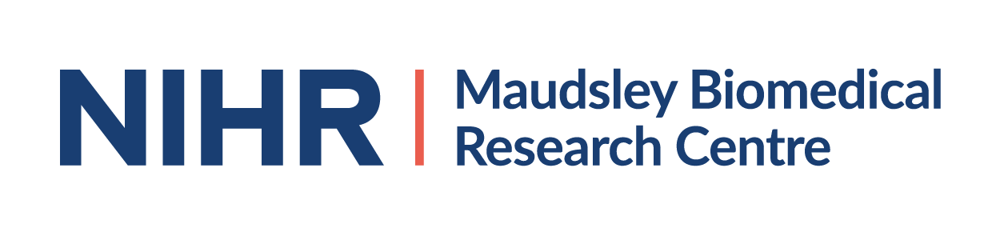
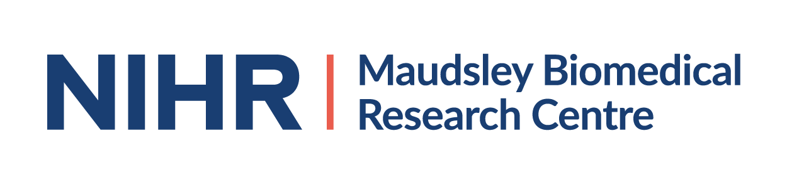
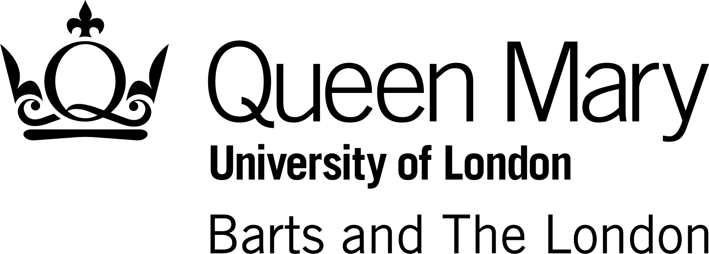
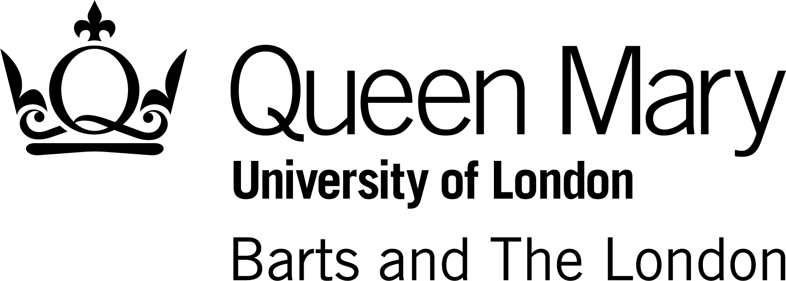

What does COVID-19 mean for our mental health
Take part in regular surveys and help us research the impact of COVID-19 on the mental health and wellbeing of people all across the UK.
We are aware that COVID-19 is taking a heavier toll on BAME communities,who are 10-50% more likely to die from COVID-19 (Public Health England, 2020). We need more BAME voices to help us understand the impact of this on mental health.
For more information, please visit our Diversity Hub and our FAQ section
ABOUT THE STUDY
The Repeated Assessment of Mental health in Pandemics (RAMP) study is a research project assessing the effect of COVID-19 on the mental health and wellbeing of the population. Since the outbreak of COVID-19, many of us have undergone major changes to our daily lives, such as staying away from friends and family, and limiting time outside of our homes.
We don’t yet know what effect this new situation will have on how we all think, feel and act or the impact on our households, health and lifestyle. With RAMP, we will monitor the mental health and wellbeing of people across the UK during this pandemic and try to understand the impact of COVID-19 so that we can better support people in the future.
You must be a resident of England, Scotland, Wales or Northern Ireland and be over the age of 16 to participate in this study.
When you sign up, you will be asked a series of different questions about your current living situation, your wellbeing and your mental and physical health. We will then send shorter follow up surveys every month and may also send very short questionnaires after major government announcements.
We thank you for your continued participation. It’s as important as ever to continue completing our surveys as we move out of lockdown, to assess how these changes affect us. Keep up to date with our social media and e-newsletter to hear about the latest RAMP data findings.
If you're eligible to participate, you can take part here. You can also download the information sheet.
Follow us or contact us here


 
